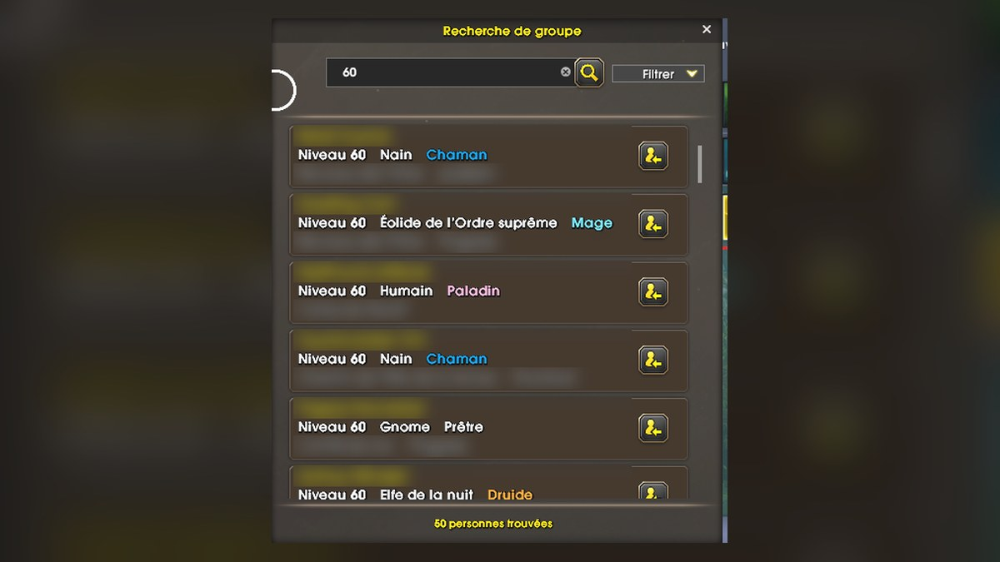

Premier niveau 60 : Jokerd remet ça, sept ans après
11 novembre 2026
Le nom qui avait atteint le niveau 60 en premier dans WoW Classic en 2019 est de nouveau en tête : la Team Jokerd est la première à toucher le niveau maximum de WoW Forever.

Cinq joueurs niveau 60 en un peu plus de deux jours
- La Team Jokerd, menée par le streameur maltais Jokerd, a mené cinq personnages au niveau 60 : trois mages morts-vivants, un paladin mort-vivant et un chaman troll.
- Côté Horde, en Europe, sur l'ensemble de règles Normal.
- D'après les calculs de Kami Labs, le niveau 60 a été atteint vers 4 h du matin le samedi 7 novembre, soit environ 52 heures après l'ouverture des serveurs. Le temps de jeu exact (/played) n'a pas été publié.
Quelques jours après la sortie, une simple recherche de groupe « 60 » trouve déjà 50 joueurs au niveau maximum (noms floutés).
Leur méthode
Pas de quêtes à la chaîne : le groupe regroupait des packs entiers de monstres et les nettoyait avec des sorts de zone. Les morts-vivants utilisaient Cannibalisme pour récupérer leur mana, ce qui ne laissait presque aucun temps mort entre deux packs. Des joueurs évoquent aussi des changements de couche pour faire réapparaître les monstres plus vite.
Le même nom qu'en 2019
En août 2019, Jokerd avait déjà été le premier niveau 60 de WoW Classic, avec un mage gnome sur le royaume européen Mograine, un record noté au Guinness à 3 jours et 7 heures. Les deux temps ne se comparent pas vraiment : jeu différent, et cette fois en équipe de cinq.
Le classement du 7 novembre au matin
| # | Joueur ou équipe | Niveau |
|---|---|---|
| 1 | Team Jokerd | 60 (5 joueurs) |
| 2 | Ksuper Worldfirst (chasseur elfe de la nuit, solo) | 56 |
| 3 | Team Ahmpy | 55 |
| 4 | Team Stensture | 53 |
| 5 | Samxd Magexd (JcJ) | 51 |
Classement communautaire (race.aotc.gg), sans certification officielle : Blizzard ne publie pas de record pour Forever.
Source : Kami Labs (7 novembre 2026), d'après race.aotc.gg, worldfirst60.com, IGN et le Guinness World Records.